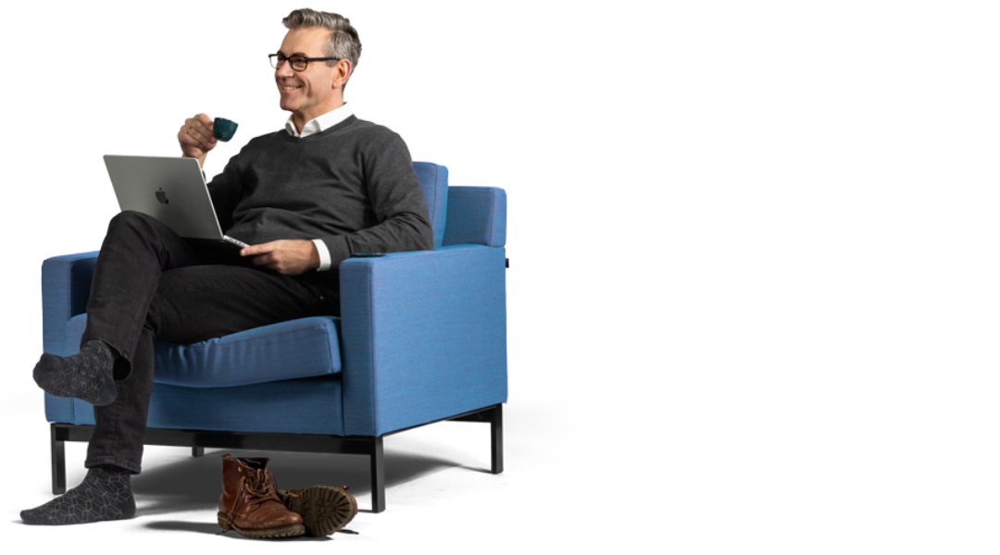

Alles wat je moet weten.
Zoek de informatie die je nodig hebt om klanten goed te woord te staan. Stel je vraag aan de assistent, of open het document zelf.
Stel je vraag
Verkoopdraaiboek.
Zo voer je het gesprek met een klant: wie wat doet, welke argumenten je gebruikt en waar je eerlijk over moet zijn. De argumenten zijn samengevat van de website van Justlease.
Sales of klantenservice? Wie doet wat in het klantproces
Fase 1: nog geen rijdende auto
- VerkoopgesprekSales
- De auto uitkiezenSales
- De aanvraag afrondenSales
- Financiële toetsingJij staat de klant te woord; vragen kun je voorleggen aan de financiële afdelingFinanciële afdeling
- Levering van de autoKlantenservice
Fase 2: rijdende auto
- Alle vragen over een rijdend contractKlantenservice
- Kilometerbundel wijzigenlps-info.arval.com/bundelwijzigingKlantenservice
- Verlenging van het contractOok als de auto al rijdtSales
- Aflopend contract: twijfel over een nieuwe auto, doorrijden of inleverenDit is een salesgesprekSales
- Kiest de klant voor inleverenVanaf dat momentKlantenservice
Samengevat per afdeling
Sales
- Het verkoopgesprek en de auto uitkiezen
- De aanvraag afronden
- Verlengingen, ook als de auto al rijdt
- Aflopend contract: twijfelt de klant over een nieuwe auto, doorrijden of inleveren, dan is dat een salesgesprek
Financiële afdeling
- De financiële toetsing: jij staat de klant te woord
- Vragen hierover kun je voorleggen aan de financiële afdeling
Klantenservice
- De levering van de auto
- Alle vragen over een rijdend contract
- Het wijzigen van de kilometerbundel
- Inleveren, zodra de klant daarvoor kiest
Servicepakketten
De klant kiest een servicepakket. Het verschil zit in het eigen risico bij schade en in het vervangend vervoer.
| Standaard | Comfort meest gekozen | Zorgeloos | |
|---|---|---|---|
| Eigen risico per schadegeval | € 475 | € 325 | € 175 |
| Vervangend vervoer op kosten van Justlease | Na 48 uur | Na 24 uur | Direct |
| Schadeverzekering inzittenden | Niet inbegrepen | Inbegrepen | Inbegrepen |
| Ontslag annuleringsoptie | Niet inbegrepen | Niet inbegrepen | Inbegrepen |
Meer informatie: justlease.nl/verzekeringen
Wat kost een auto?
Op de website staat wat een auto kost. Stel de auto samen naar wens: kies de kilometerbundel, de looptijd en het servicepakket, en voeg eventueel allseason banden toe. Onderaan de pagina staat dan de prijs per maand. Noem alleen prijzen die op de website staan.
Argumenten in het gesprek
Wanneer mag een klant leasen?
- De klant is minimaal 18 jaar oud
- Hij heeft een geldig Nederlands rijbewijs
- Hij heeft een geldige Nederlandse ID-kaart of een paspoort
- Hij voldoet aan de minimale inkomenseis
Justlease beoordeelt per persoon of leasen haalbaar is. Er wordt gekeken naar het inkomen, het soort arbeidscontract, de woonsituatie en eventuele schulden of achterstallige betalingen. Ook zzp'ers, AOW'ers en ondernemers komen in aanmerking. De klant levert altijd een salarisstrook, een bankafschrift en een ID-kaart of paspoort aan.
Negatieve BKR-codering? Dan kan de klant bij Justlease niet leasen, ook niet zakelijk. Justlease heeft een zorgplicht voor de financiële last die mensen kunnen dragen.
Contract voor bepaalde tijd of korter dan een jaar in dienst? Dan is een werkgeversverklaring nodig van maximaal drie maanden oud, ondertekend door de werkgever en voorzien van een firmastempel. Een intentieverklaring van de werkgever is ook voldoende. Past de huidige situatie niet, bijvoorbeeld door een nulurencontract, dan kan iemand garant staan voor het contract.
Zzp'er? Geen loonstrook, maar wel een KvK-uittreksel van maximaal drie maanden oud en de meest recente inkomensverklaring van de Belastingdienst. De klant moet minimaal een jaar als zzp'er werken.
Samenvatting van justlease.nl/wanneer-auto-leasen en justlease.nl/leasen-zonder-vast-contract
Medecontractant: wanneer en wat is nodig?
- Een medecontractant is nodig als de hoofdcontractant niet alleen door de financiële toetsing komt
- De medecontractant levert ook een salarisstrook, het bankafschrift met de woonlasten en een rijbewijs aan
- Beiden zijn hoofdelijk aansprakelijk: Justlease kan van elk van hen de volledige betaling vragen, niet de helft
- Bij overlijden van een van de twee kan het contract kosteloos worden beëindigd; de overblijvende partner kiest zelf of hij doorgaat
Hoofdelijkheid: Algemene voorwaarden Keurmerk Private Lease, vraag 57. Overlijden: Aanvullende voorwaarden Justlease, artikel P.
Leasen of kopen? Zo leg je het uit
| Onderwerp | Kopen | Leasen bij Justlease |
|---|---|---|
| Auto uitzoeken | Eindeloos zoeken, onderhandelen en langs meerdere dealers of particulieren | Nieuw samenstellen, occasion of uit de voorraad, alles vergelijken op één platform en direct de vaste prijs per maand zien |
| Betalen | Grote uitgave in één keer en onzekerheid over extra kosten | Vast maandbedrag zonder financiële verrassingen; spaargeld blijft beschikbaar; geen slotsom aan het einde |
| Autozaken regelen | Zelf verzekering en garage zoeken; onverwachte, hoge kosten | Verzekering, pechhulp, onderhoud en reparatie zijn geregeld; de klant maakt alleen een onderhoudsafspraak via de app |
| Pech of schade | Zelf hulp regelen, kans op hoge kosten en een stijgende premie | Haal- en brengservice, alleen een eigen risico, pechhulp in binnen- en buitenland |
Samenvatting van justlease.nl/ontdek-private-lease-kopen-of-leasen
De voordelen van private lease bij Justlease
In het vaste maandbedrag zitten afschrijving, vervangend vervoer, verzekering, onderhoud, banden, reparatie en verkoop. Het basistarief verandert niet tijdens de looptijd. Bij schade geldt alleen een eigen risico, en alleen als de schade niet op een derde te verhalen is.
- Geen groot aankoopbedrag nodig
- Geen zorgen over reparatie en onderhoud
- Volledig grip op en inzicht in de autokosten
- Standaard all-risk verzekerd, met de optie om beter verzekerd te zijn
- Flexibele kilometerbundel, één keer per kwartaal kosteloos aan te passen
- Persoonlijke online omgeving en app
- Haal- en brengservice bij onderhoud
- Ontslag annuleringsoptie: bij ontslag kan de klant van de auto af (alleen bij het servicepakket Zorgeloos)
- Aangesloten bij het Keurmerk Private Lease en onderdeel van Arval
Samenvatting van justlease.nl/ontdek-private-lease-voordelen
De nadelen: wees er eerlijk over
- BKR-registratie. Een leasecontract geeft een BKR-registratie, ook bij Justlease. Dat hoeft geen negatief effect te hebben als de klant aan zijn verplichtingen voldoet, maar het kan invloed hebben op een hypotheekaanvraag. De registratie blijft 5 jaar na het einde van het contract zichtbaar, met een einddatum erbij. Het contract komt onder de code OA. Een leasecontract zonder BKR-registratie bestaat bij Justlease niet, en met een negatieve BKR-codering kan een klant niet leasen.
- Geen lening. Private lease is geen lening: Justlease blijft eigenaar van de auto.
- Schadevrije jaren. Bij de meeste leasemaatschappijen bouwt de klant tijdens de leaseperiode geen schadevrije jaren op. Justlease geeft aan het einde een leaseverklaring, die de meeste verzekeraars kunnen verwerken.
- Langlopend contract. Bijvoorbeeld 24 tot 60 maanden. Dat geeft een lager tarief, maar is een nadeel voor wie geen lang contract wil.
Samenvatting van justlease.nl/ontdek-private-lease-voordelen
Nieuw of occasion leasen?
Occasion
- Altijd een jong gebruikte auto, met strenge inspectie op schade, onderhoudshistorie en staat
- Levertijd ongeveer 6 weken na het afronden van de aanvraag
- Scherper tarief dan nieuw
- Een kortere looptijd kost een stuk minder dan bij nieuw
Nieuw
- Compleet nieuwe auto en weinig onderhoud
- Helemaal zelf samen te stellen naar eigen wens
- Levering duurt ongeveer 4 tot 6 maanden na het afronden van de aanvraag (verschilt per merk, model en uitvoering)
Kies nieuw als de klant waarde hecht aan een gloednieuwe auto, 4 tot 6 maanden kan wachten en een lang contract prima vindt. Kies occasion als duurzaamheid telt, de klant snel een auto wil en het laagste tarief zoekt.
Let op: een occasion lijkt soms duurder dan nieuw. Kijk dan naar de uitvoering: van elke occasion is er maar één, dus navigatie of optiepakketten kunnen verschillen. Noem geen prijzen uit je hoofd; verwijs naar de aanbodpagina.
Samenvatting van justlease.nl/nieuw-of-occasion-leasen en justlease.nl/private-lease-occasion
Uitleg voor klanten
Wat zit er in de leaseprijs, en wat niet?
Inbegrepen
- Wegenbelasting
- Onderhoud, reparatie en banden
- Pechhulp in alle landen op de groene kaart
- Vervangend vervoer (termijn per servicepakket)
- Haal- en brengservice bij onderhoud
- All-risk, WA en casco, verhaalsbijstand
- Flexibele kilometerbundel
Niet inbegrepen
- Brandstof of laadkosten
- Verkeersboetes, parkeer- en tolkosten
- Het eigen risico bij schade
Wegenbelasting: wijzigt die tijdens de looptijd, dan mag Justlease dat doorberekenen in het maandbedrag. Dat gebeurt één keer per jaar. Kilometers: Justlease biedt standaard minimaal 12.000 km per jaar; bij veel aanbieders is dat 10.000. Vergelijk dus bundel en looptijd, niet alleen de prijs. Het maandtarief kan niet zomaar veranderen, tenzij de klant zelf iets aanpast.
Samenvatting van justlease.nl/kosten-private-lease
Onderhoud, schade en pech
- Onderhoud, reparatie en banden zijn inbegrepen. De klant plant zelf een afspraak via de MyLeez-app; er is een gratis haal- en brengservice.
- Klein onderhoud blijft voor de klant: olie bijvullen, ruitenwisservloeistof, bandenspanning en de auto wassen.
- Schade door een ander wordt verhaald op diens verzekeraar: de klant betaalt niets. Bij schade die de klant zelf heeft veroorzaakt betaalt hij alleen het eigen risico, nooit meer dan de schade zelf. De no-claimkorting verandert niet.
- Pechhulp zit standaard in het contract en is 24/7 bereikbaar, in alle landen op de groene kaart.
- De klant mag de auto uitlenen aan iedereen met een geldig Nederlands rijbewijs.
Samenvatting van justlease.nl/private-lease-3/onderhoud-schade en justlease.nl/pech-onderweg
Van bestelling tot aflevering
- De klant kiest een model en stelt de auto samen, of kiest een nieuwe auto uit voorraad of een occasion.
- Hij stelt het contract samen: looptijd, kilometers en opties. Daarna krijgt hij het voorstel.
- Hij maakt de bestelling compleet in zijn eigen omgeving en na goedkeuring geeft sales de order door aan de operationele afdeling.
- De auto wordt in Nijkerk klaargemaakt: inspectie, wasstraat, technische check, schadeherstel, spuitcabine, schoonmaak en eindinspectie.
- De klant krijgt een e-mail dat de auto klaar is en plant zelf de aflevering. De auto wordt thuisbezorgd.
- Op de dag van aflevering gaat het leasecontract in.
Voorloopauto: een tijdelijke auto voor wie niet kan wachten. Alleen aan te vragen na het bestellen van een nieuwe auto, beschikbaar 1 tot 2 dagen na het compleet maken van de bestelling. Minimaal een maand (korter wordt met een dagtarief berekend), 2.000 kilometer per maand. Aanvragen via 030 850 1500, optie 2.
Samenvatting van justlease.nl/van-aanvraag-tot-aflevering en justlease.nl/diensten/voorloopauto
Elektrisch of hybride leasen
- Geen grote aanschaf en geen zorgen over restwaarde of accu: een vast maandbedrag. Er zijn ook kleine, goedkopere elektrische stadsauto's.
- Soorten: volledig elektrisch, plug-in hybride (tot ongeveer 125 km elektrisch) en range extender. Bij hybrides ook mild hybrid en full hybrid.
- Thuis laden is het goedkoopst. Via een laadpaal duurt 10 tot 80% gemiddeld 5 uur, via een stopcontact gemiddeld 12 uur. Openbaar laden verschilt per aanbieder en gemeente.
- De actieradius (WLTP) is een laboratoriumwaarde. In de praktijk is die lager, in de winter 20 tot 50 kilometer. Beloof een klant nooit het WLTP-bereik.
- De overheidssubsidie is gestopt. In 2026 betalen emissievrije auto's 70% van de wegenbelasting; bij plug-in hybrides vervalt de korting. Wijzigingen worden doorberekend in het maandbedrag.
Samenvatting van justlease.nl/elektrisch-private-lease, justlease.nl/wltp-informatie en justlease.nl/wegenbelasting-in-2026
Zakelijk leasen en mobiliteitsbudget
- Zakelijk leasen loopt via Arval, waarmee Justlease is samengegaan. Verwijs een zakelijke klant daarheen.
- Private lease is operational lease: de auto blijft van de leasemaatschappij. Financial lease biedt Justlease niet aan.
- Bij private lease is de klant als persoon aansprakelijk; bij zakelijk leasen staat het contract op de zaak en is er geen BKR-registratie.
- Met een mobiliteitsbudget van de werkgever kan een werknemer een private leaseauto betalen zonder bijtelling. Gaat hij uit dienst, dan stopt het budget maar loopt het contract door.
Samenvatting van justlease.nl/zakelijk-leasen, justlease.nl/mobiliteitsbudget en justlease.nl/financial-lease
Contact, MyLeez en klachten
- Vragen over een lopend contract: 030 850 1500, 08:30 tot 17:00, klantenservice@justlease.nl.
- Vragen over een offerte: 030 850 1500 (keuze 2), 08:00 tot 21:00.
- MyLeez-app: contract en papieren, facturen, kilometerbundel, onderhoud plannen, schade melden en direct contact. Zonder toegang maakt Justlease een account aan; binnen twee werkdagen komt er een activeringsmail.
- Kentekenbewijs: de klant krijgt bij aflevering een tijdelijke code; het bewijs komt binnen 3 tot 5 werkdagen per post op naam van Arval B.V.
- Klacht? Via arval.nl/klachten. Binnen 14 dagen volgt een inhoudelijke reactie. Daarna kan de klant naar de Geschillencommissie Private Lease.
Samenvatting van justlease.nl/service-en-contact, justlease.nl/myleez-toegang, justlease.nl/autodocumenten en justlease.nl/klachtenprocedure-private-lease
Kennisquiz.
De eindtoets met de vragen die klanten je vaak aan de telefoon stellen. Kies bij elke vraag het juiste antwoord. Klik je antwoord nog een keer aan om het weg te halen. Je bent geslaagd als je maximaal 3 fouten maakt.
Over Justlease.
Justlease is het Private Lease label binnen Arval BNP Paribas Group, de specialist in Private Lease. Ons verhaal begon in 2012 met de ambitie om autolease bereikbaar te maken voor particulieren. Handig om te weten voordat je de eerste klant spreekt.
